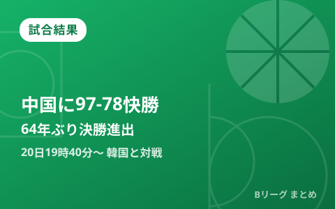

男子日本代表、中国に97-78で快勝し64年ぶり決勝進出 銀メダル以上確定 20日19時40分から韓国と金メダルを懸け激突

第20回アジア競技大会（愛知・名古屋2026）バスケットボール男子準決勝が9月18日、愛知国際アリーナ（IGアリーナ）で行われ、男子日本代表は中国に97-78で快勝しました。この勝利により、日本は1962年ジャカルタ大会以来64年ぶりとなる決勝進出を果たし、大会の銀メダル以上を確定。決勝は9月20日19時40分から韓国と対戦し、初の金メダルを懸けて戦います。
前半で19点リード、中国を最後まで圧倒
日本は試合序盤から主導権を握り、前半を49-30の19点リードで折り返しました。後半も中国の追い上げを許さず、最終スコア97-78で試合を締めくくりました。世界ランキングで日本より下位の中国を相手に、終始安定した戦いぶりを見せた形です。
金近廉19得点、カークはダブルダブル
この試合では帰化選手の金近廉が3ポイントシュート4本を含む19得点4リバウンド3アシストと活躍。インサイドではアレックス・カークが15得点12リバウンドのダブルダブルを記録し、ローレンス・ハーパージュニアも3ポイント4本を含む14得点をマークするなど、複数の選手が得点を分け合う攻撃力の高さが際立ちました。
| 選手 | 成績 |
|---|---|
| 金近廉 | 19得点（3P4本）4リバウンド3アシスト |
| アレックス・カーク | 15得点12リバウンド（ダブルダブル） |
| ローレンス・ハーパージュニア | 14得点（3P4本） |
1次リーグから準決勝までの戦績
日本はグループAの1次リーグを2勝1敗の2位で通過し、準々決勝でチャイニーズ・タイペイに85-78で競り勝って3大会ぶりのベスト4進出。続く準決勝で中国を下し、ここまでの戦績は次の通りです。
| 日程 | ラウンド | 対戦相手 | 結果 |
|---|---|---|---|
| 9月10日（木） | 1次リーグ | vs インドネシア | 98-53 勝利 |
| 9月11日（金） | 1次リーグ | vs サウジアラビア | 86-80 勝利 |
| 9月13日（日） | 1次リーグ | vs 大韓民国 | 83-100 敗戦 |
| 9月16日（水） | 準々決勝 | vs チャイニーズ・タイペイ | 85-78 勝利 |
| 9月18日（金） | 準決勝 | vs 中国 | 97-78 勝利 |
| 9月20日（日）19:40〜 | 決勝 | vs 大韓民国 | これから |
決勝は1次リーグで敗れた韓国とのリベンジマッチ
決勝の相手となる韓国は、1次リーグで日本が83-100で敗れた相手です。決勝ではその借りを返し、大会史上初となる金メダル獲得を狙う一戦になります。仮に敗れても銀メダルは確定しているため、日本にとっては1962年大会に並ぶ最高成績以上が保証された状態での決勝進出となりました。
決勝の中継・配信情報
決勝の日本対韓国戦は、TBS系列で9月20日13時00分から22時54分まで全国ネットで大会の男子決勝・3位決定戦がLIVE放送される予定で、動画配信サービスのU-NEXTでも試合開始に合わせてライブ配信が行われる予定です。放送枠や配信の詳細は変更となる場合があるため、視聴前に最新情報をご確認ください。
Q. 決勝で敗れてもメダルは確定？
A. はい。準決勝で中国に勝利した時点で銀メダル以上が確定しており、これは1962年ジャカルタ大会に並ぶ日本男子バスケットボールの大会最高成績です。決勝で韓国に勝てば、悲願の金メダル獲得となります。
出典：バスケットボールキング「男子日本代表が中国を圧倒し、64年ぶりのアジア大会決勝進出！ 初の金メダルをかけて韓国代表と再戦へ」／中日新聞Web「バスケ男子、日本が過去最高に並ぶ銀メダル以上確定 アジア大会、中国に完勝」／TBS NEWS DIG（Yahoo!ニュース配信）「バスケ男子日本代表が64年ぶりの決勝進出！中国を撃破し金メダルに王手、決勝の相手は韓国」ほか
https://news.yahoo.co.jp/articles/e41e7e130d0dc3e3bee448a4a41b304efb78a395
https://www.chunichi.co.jp/article/1313281
https://news.yahoo.co.jp/articles/87cc2c2ecdcc47753f052a1c9c998834cd8ba782